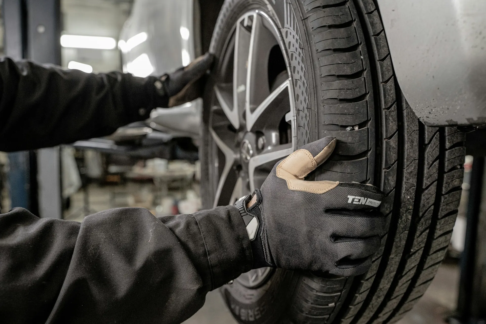
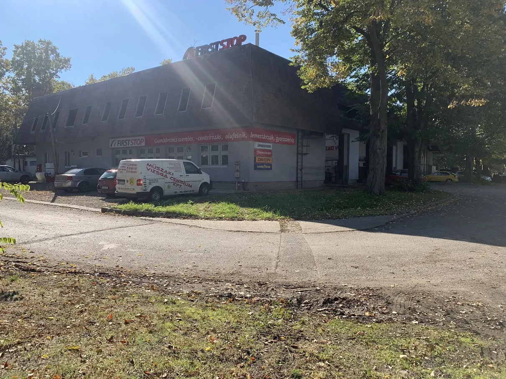
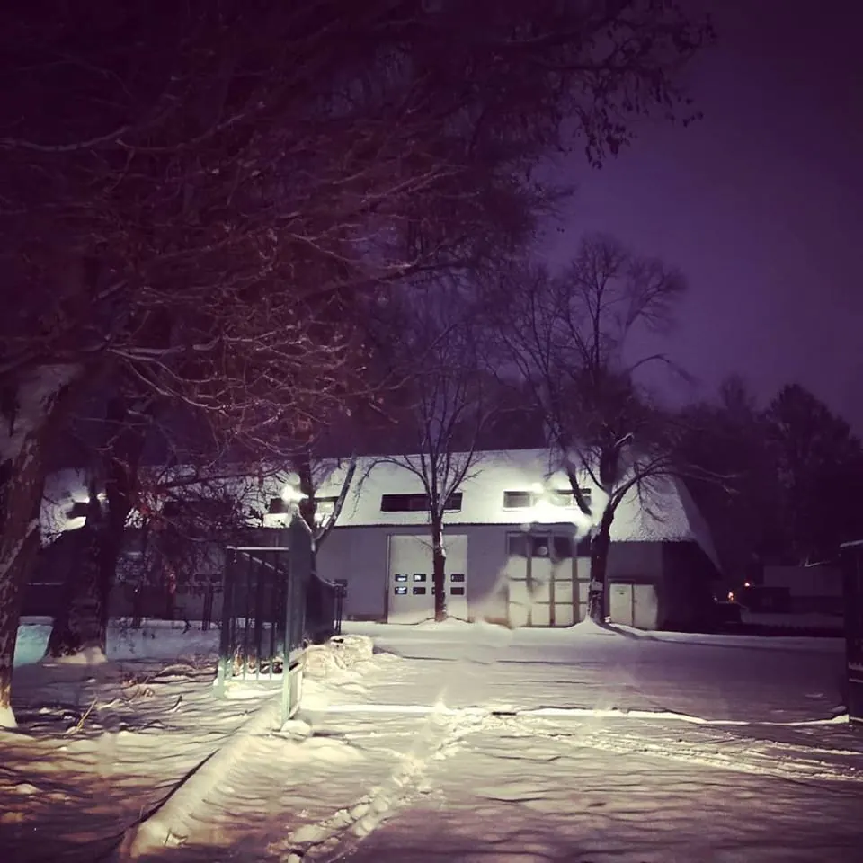

Műszaki vizsgáztatás
Minden kategóriában: személyautó, teherautó, kamion, traktor, utánfutó.

Vizsga minden kategóriában – személyautó, teherautó, kamion, traktor, utánfutó. Gumiszerelés és -forgalmazás, gépjárműjavítás 3,5 tonnáig.
Válassza ki a járművet: megmutatjuk, mit vállalunk rá, és melyik számon éri el a megfelelő kollégát. Utána kérhet időpontot.
Ezt mind elintézzük, egy telephelyen.
Hagyja meg a számát, és nyitvatartási időben visszahívjuk.
Minden kategóriára kiterjedő műszaki vizsga, eredetvizsga, gumiszerelés és -forgalmazás, valamint gépjárműjavítás 3,5 tonnáig.
Minden kategóriában: személyautó, teherautó, kamion, traktor, utánfutó.
Közvetlen szám: +36 20 583 1437.
Gumiszerelés, -javítás és -forgalmazás minden kategóriában.
Személyautó és kisteherautó, 3,5 tonnáig.
Személygépkocsi és kisteherautó gyorsszervizelése.
Futómű-beállítás a gumicserével vagy javítással egy alkalommal.
Gépjármű honosítása.
Külföldi gépjármű hazai forgalomba helyezése.
Vizsgaállomásként indultunk, ma a vizsga mellett a gumit és a javítást is helyben intézzük.
Időpontot kérekMegalakul a cég. Kezdetben műszaki vizsgával és eredetvizsgával foglalkozunk.
Bővül a kör: minden kategóriára kiterjedő gumiszerelés és -forgalmazás, valamint személygépkocsik és kisteherautók gyorsszervizelése.
Energetikai fejlesztés: napelemes rendszer a csarnok tetején, új nyílászárók és hőszigetelt ipari kapuk.
napelemes rendszer a tetőn: a telephely villamosenergia-ellátásának közel 100%-át kiváltja.
256 vélemény a Google-on. Az ügyfelek a gyorsaságot, a segítőkészséget és a korrektséget emelik ki.
„Soron kívül, időpont nélkül, mégis azonnal fogadtak és segítettek.”
Jó minőségű, kedvező árú téli gumit kapott raktárról, és még aznap fel is szerelték.
Kopogó futóművel jött: időpont után átvizsgálták a lengéscsillapítókat és a futóművet, és mivel hamar végeztek, nem kértek érte pénzt.


7632 Pécs, Siklós u. 68. Hétfőtől péntekig 7 és 16 óra között várjuk, hétvégén zárva vagyunk.
Minden kategóriában vizsgáztatunk: személyautót, teherautót, kamiont, traktort és utánfutót is.
Személyautót és kisteherautót javítunk, 3,5 tonnáig. Gumiszerelést minden kategóriában vállalunk.
Igen, vállaljuk a gépjármű honosítását és a külföldi gépjármű hazai forgalomba helyezését.
Műszaki vizsga: +36 30 687 3135. Gépjárműjavítás és gumiszerelés: +36 30 590 9619. Eredetvizsga: +36 20 583 1437.
Hétfőtől péntekig 7 és 16 óra között. Szombaton és vasárnap zárva vagyunk.